Թեստ 3
30:00
1. «Ճանապարհային երթեւեկության անվտանգության ապահովման մասին» ՀՀ օրենքի համաձայն՝ «BE» կարգի տրանսպորտային միջոցներ վարելու իրավունքի վկայական կարող է տրվել՝
2. Ո՞ր նկարում է խաչմերուկ պատկերված
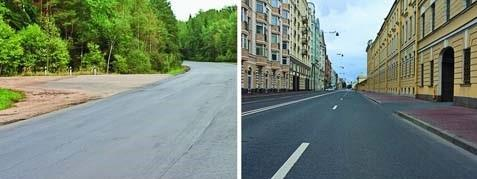
3. Տրանսպորտային միջոցների շահագործումն արգելվում է, եթե`
4. Տրանսպորտային միջոցների շահագործումն արգելվում է, եթե՝
5. Նշված դեպքում ո՞ր գոտուց պետք է կատարվի աջ շրջադարձը:
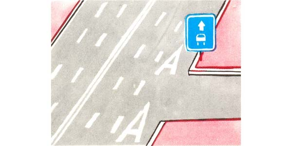
6. Այս ճանապարհային նշանը ցույց է տալիս`

7. Ի՞նչպես պիտի վարվի վարորդն այն դեպքում, երբ խաչմերուկից առաջ տեղադրված է հետևյալ ճանապարհային նշանը:
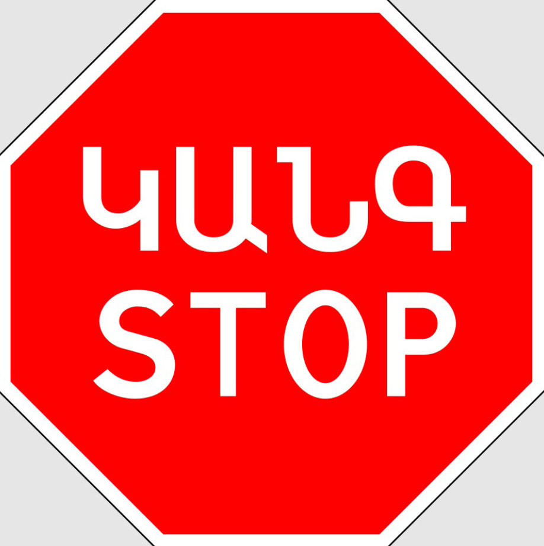
8. Ո՞ր տրանսպորտային միջոցի վարորդը պետք է զիջի ճանապարհը:
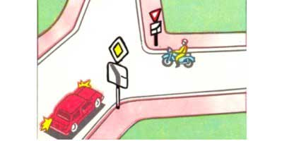
9. Այս ճանապարհային նշանը՝
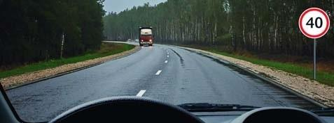
10. Այս իրավիճակում աջ շրջադարձ կատարելիս՝
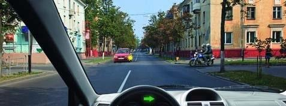
11. Այս խաչմերուկում՝
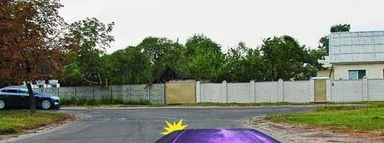
12. Թո՞ւյլատրվում է կանգառ կատարել նշված վայրում
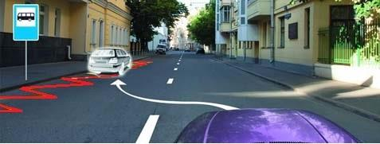
13. Կարմիր ավտոմոբիլը խաչմերուկը կանցնի`
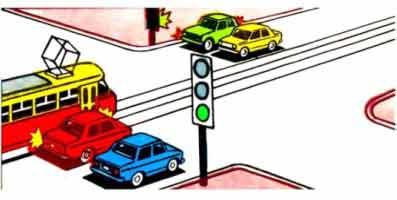
14. Ո՞ր պատասխանում են ճիշտ թվարկված կանգառի կանոնները խախտած վարորդները:
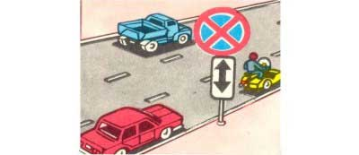
15. Թույլատրվու՞մ է արդյոք ճկուն կամ կոշտ կցիչով քարշակման դեպքում մարդկանց փոխադրումը քարշակվող մեխանիկական տրանսպորտային միջոցում:
16. Թո՞ւյլատրվում է կայանել նշված վայրում
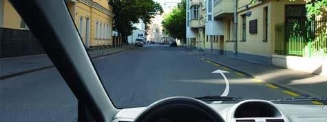
17. Տրանսպորտային միջոցների վազանց նշանակում է`
18. Ինչպե՞ս պետք է վարվեք խաչմերուկից դուրս ձախ շրջադարձի և հետադարձի ժամանակ
19. Ո՞ր բակ է թույլատրվում մուտք գործել վարորդին
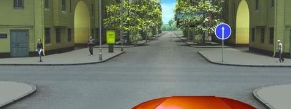